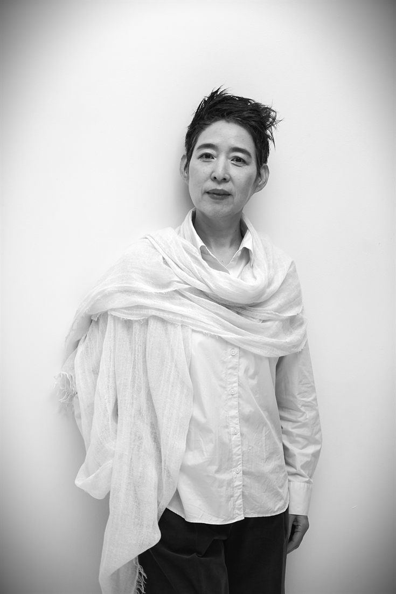

소속 및 경력
- 2022–현재 조이캄 대표
- 2024–현재 (사)한국명상학회 선임이사
- 2015–2021 아주대학교 건강명상연구센터 연구원
Founder Profile

Mindfulness Leadership Educator · Meditation Coach · Founder, JoyCalm
마음챙김과 컴패션을 기반으로 개인과 조직의 내면역량을 개발합니다. 기업 리더와 임직원, 의료·돌봄 종사자, 교사와 학부모, 상담자와 코치를 대상으로 명상교육, 명상코칭, 마음챙김 리더십 프로그램을 기획하고 운영합니다.